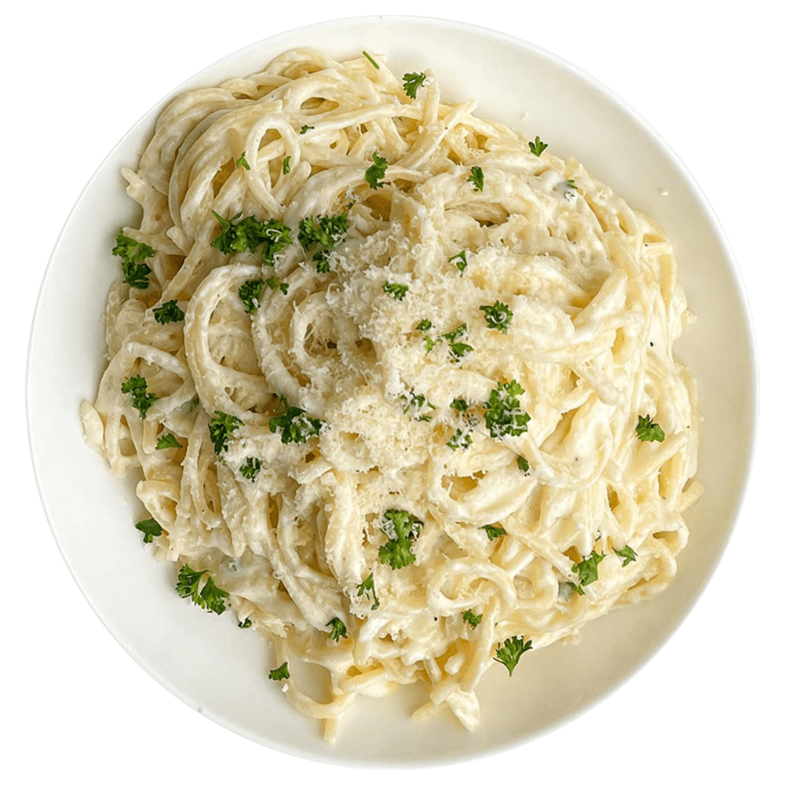

Receta: Pasta Alfredo

Ingredientes
| Ingredientes | Cantidad |
|---|---|
| Pasta fettuccine | 200g |
| Mantequilla | 50g |
| Crema de leche | 200ml |
| Queso parmesano rallado | 100g |
| Sal y pimienta | Al gusto |
Preparación
- Cocer la pasta en agua con sal hasta que esté al dente.
- En una sartén, derretir la mantequilla a fuego medio.
- Agregar la crema de leche y cocinar unos minutos.
- Incorporar el queso parmesano y mezclar bien.
- Escurrir la pasta y mezclar con la salsa.
- Servir caliente y disfrutar.